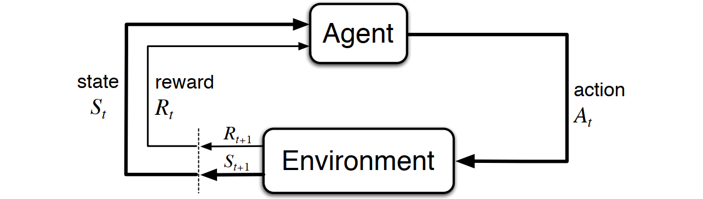

\[ \textbf{Markov Decision Process (MDP)} \]

\[ \Downarrow \]
\[ \textbf{Temporal-Difference TD(λ)} \]
\[ V_{\text{new}}(S_t) \leftarrow V_{\text{old}}(S_t) + \eta \cdot \left[ G_t^{\lambda} - V_{\text{old}}(S_t) \right] \] \[ G_t^{\lambda} = (1-\lambda)\sum_{n=1}^{T-t-1}\lambda^{n-1}G_{t:t+n} + \lambda^{T-t-1}G_t \]
\[ \Downarrow \]
\[ G_t^{\lambda} \xrightarrow{\lambda = 0} G_t^{0} = (1-0)\sum_{n=1}^{T-t-1}0^{n-1}G_{t:t+n} + 0^{T-t-1}G_t \]
\[ \Downarrow \]
\[ G_t^{0} = G_{t:t+1}= r_{t+1} + \gamma V_{\text{old}}(S_{t+1}) \]
\[ \Downarrow \]
\[ \textbf{Temporal-Difference TD(0)} \]
\[ V_{\text{new}}(S_t) \leftarrow V_{\text{old}}(S_t) + \eta \cdot \left[ r_{t+1} + \gamma V_{\text{old}}(S_{t+1}) - V_{\text{old}}(S_t) \right] \] \[ \Downarrow \]
\[ r_{t+1} + \gamma V_{\text{old}}(S_{t+1}) \quad \xrightarrow{\gamma = 0} \quad r_{t+1} \]
\[ \Downarrow \]
\[ \textbf{Rescorla-Wagner Model} \]
\[ V_{\text{new}}(S_t) \leftarrow V_{\text{old}}(S_t) + \eta \cdot \left[r_{t+1} - V_{\text{old}}(S_t) \right] \]